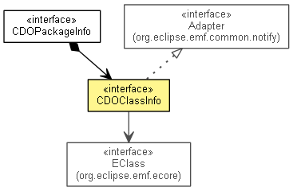

org.eclipse.emf.cdo.common.model
Interface CDOClassInfo
- All Superinterfaces:
- Adapter
- All Known Subinterfaces:
- InternalCDOClassInfo
- public interface CDOClassInfo
- extends Adapter

An EMF adapter that encapsulates CDO specific information about an EClass.
- Since:
- 2.0
- No Implement
- This interface is not intended to be implemented by clients.
- No Extend
- This interface is not intended to be extended by clients.
getEClass
EClass getEClass()
isResourceNode
boolean isResourceNode()
isResourceFolder
boolean isResourceFolder()
isResource
boolean isResource()
isPersistent
boolean isPersistent(int featureID)
- Since:
- 4.2
isPersistent
boolean isPersistent(EStructuralFeature feature)
- Since:
- 4.2
hasPersistentOpposite
boolean hasPersistentOpposite(EStructuralFeature feature)
- Since:
- 4.2
getAllPersistentFeatures
EStructuralFeature[] getAllPersistentFeatures()
getAllPersistentReferences
EReference[] getAllPersistentReferences()
- Since:
- 4.2
getAllPersistentContainments
EStructuralFeature[] getAllPersistentContainments()
- Since:
- 4.2
getFeatureIndex
@Deprecated
int getFeatureIndex(EStructuralFeature feature)
- Deprecated. As of 4.2 pushed down to
InternalCDOClassInfo.getPersistentFeatureIndex(EStructuralFeature).
getFeatureIndex
@Deprecated
int getFeatureIndex(int featureID)
- Deprecated. As of 4.2 pushed down to
InternalCDOClassInfo.getPersistentFeatureIndex(int).
Copyright (c) 2011, 2012 Eike Stepper (Berlin, Germany) and others.